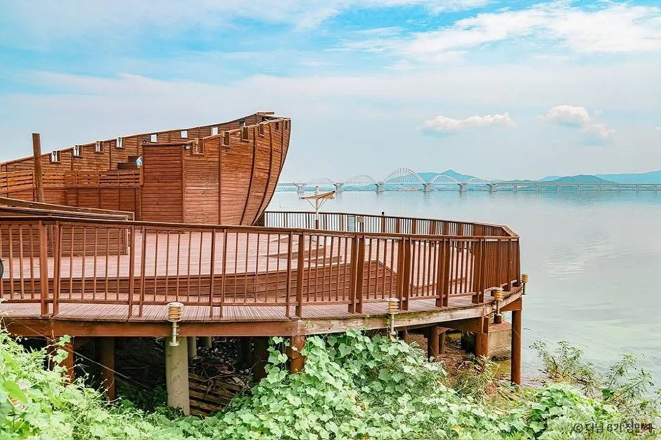
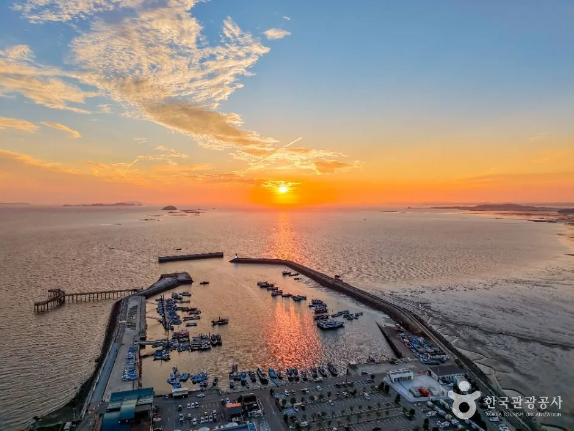
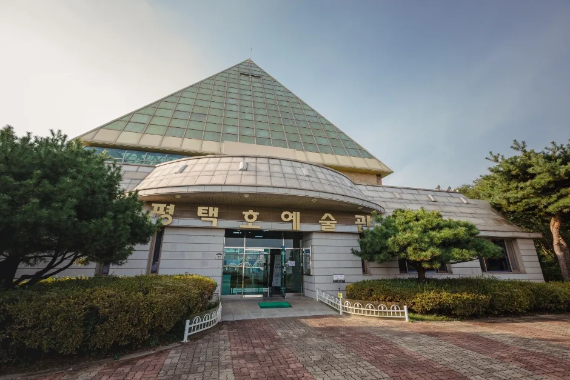
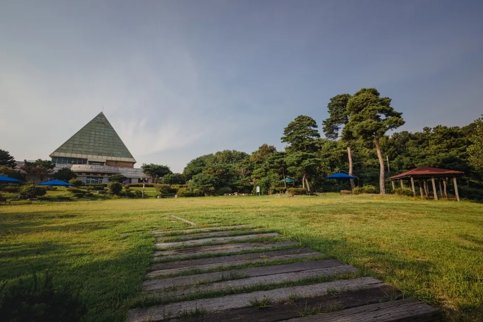
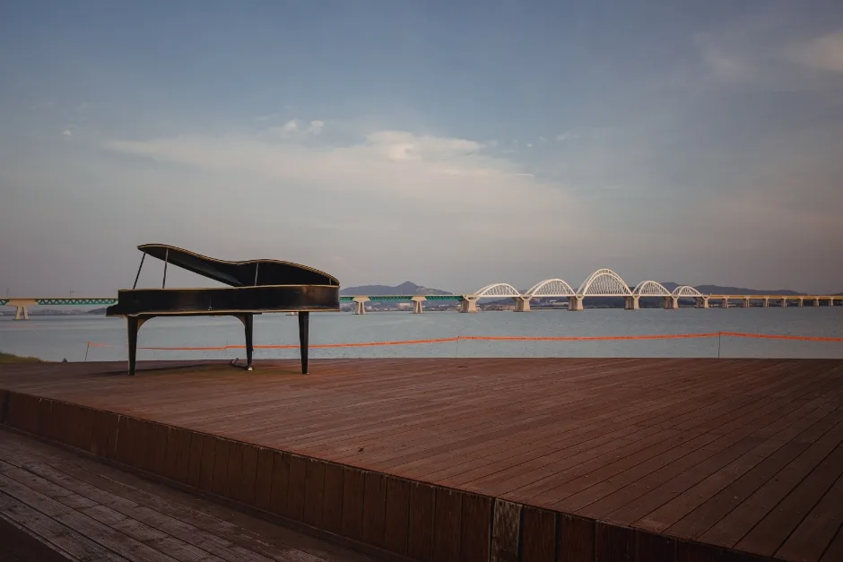
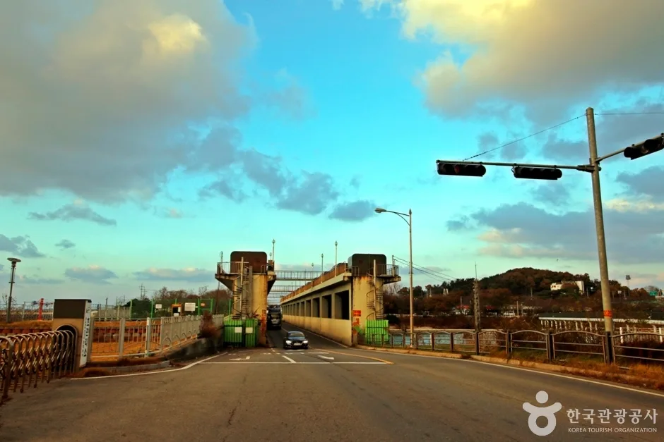
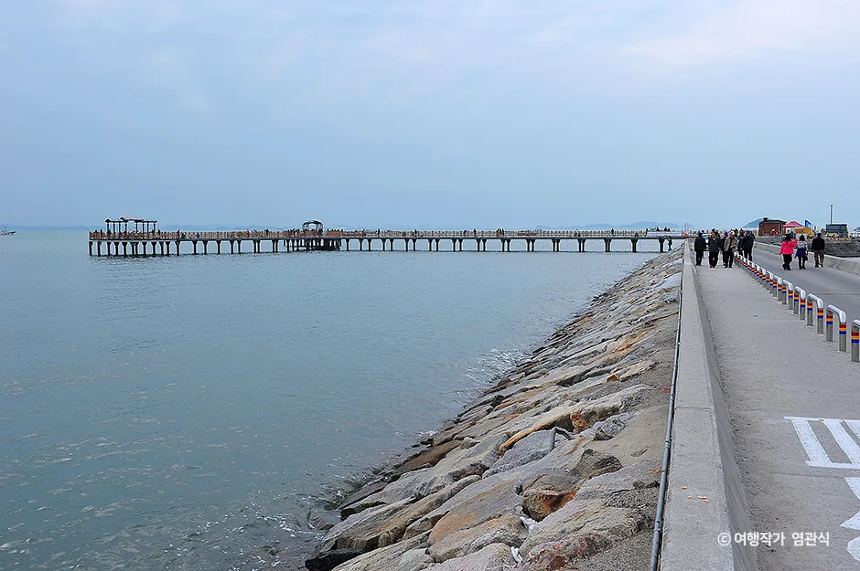
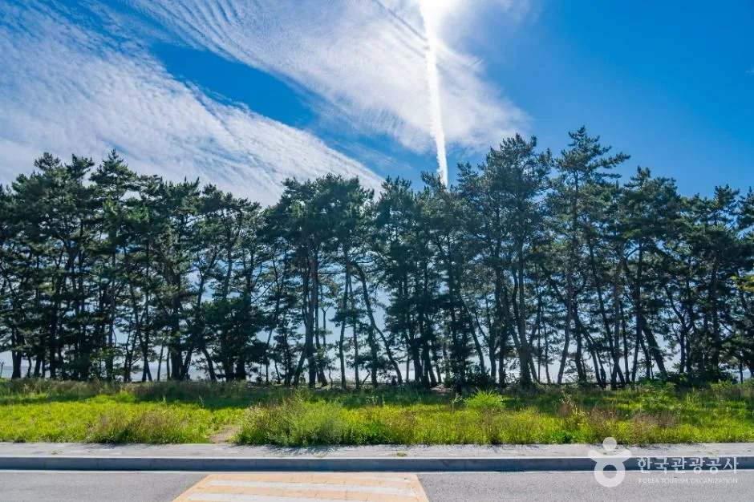

▲ 평택호 관광단지의 상징 중 하나인 배 모양 목조 전망대. 물빛축제가 열리는 한국소리터·모래톱공원과 가깝다 ⓒ 한국관광공사
물 위에 뜬 배 모양 전망대 뒤로 불꽃이 터지고, 드론이 밤하늘에 그림을 그린다. 2026년 9월 12일 토요일, 경기 평택시 현덕면 평택호 관광단지 일원에서 열린 '2026 평택호 물빛축제' 얘기다.
축제는 하루 만에 끝났지만, 평택호 관광단지 자체는 연중 무휴로 남아 있다. 불꽃과 드론쇼를 놓쳤어도, 혹은 내년 축제를 미리 준비하는 입장이어도 평택호에서 볼 것은 따로 있다. 이 글은 2026년 축제의 실제 진행 내용과 축제 당일 불거진 문제, 그리고 관광단지 자체 명소와 주변 드라이브 코스까지 함께 정리한다.
1. 2026 평택호 물빛축제 — 정확히 언제, 어디서, 무엇을 했나
평택시 문화관광재단 공지 기준으로 2026 평택호 물빛축제는 9월 12일 토요일 단 하루, 오전 11시부터 밤 9시까지 진행됐다. 장소는 경기 평택시 현덕면 평택호길 159 일원, 구체적으로는 한국소리터와 모래톱공원을 중심으로 무대와 부스가 배치됐다. 입장료는 무료다.
| 연도 | 일정 | 비고 |
|---|---|---|
| 2024년 | 8월 중 개최 | 여름철 물빛 테마로 진행 |
| 2025년 | 9월 13일(토) 11:00~21:00 | 평택시 통합 30주년 기념, 뮤지컬 '위드유싱어즈'·가수 곽진언 공연, 약 2만 명 방문 |
| 2026년 | 9월 12일(토) 11:00~21:00 | 지역 예술인 상설공연 + 물빛콘서트 + 불꽃공연·드론쇼, 푸드트럭 운영 |
축제명이 '물빛'인 이유는 프로그램 대부분이 호수면과 조명·불빛을 함께 연출하는 데서 비롯됐다. 언론 보도에 따르면 낮에는 지역 예술인 상설공연, 체험 부스, 지역작가 기획 프로그램이 이어지고, 해가 진 뒤에는 물빛 콘서트(초청가수 축하공연)와 불꽃공연, 드론쇼가 순서대로 펼쳐지는 구성이다. 개최 시기는 해마다 8월 말~9월 중순 사이에서 조금씩 바뀌어 왔으므로, 2027년 이후 방문을 계획한다면 매년 여름 말 평택시 공지를 다시 확인하는 편이 안전하다.

▲ 평택호 물빛축제는 '물과 빛'을 주제로 하지만, 서해안 특유의 노을은 인근 궁평항에서도 사시사철 볼 수 있다 ⓒ 한국관광공사
2. 셔틀버스와 주차 — 2025년의 혼잡이 알려주는 것
2026년 축제는 평택당진항 국제여객터미널(포승읍 신영리)과 구 평택항 국제여객터미널(포승읍 평택항만길)에서 무료 셔틀버스를 운영했다. 관광단지 내 도로변 주차는 넉넉하지 않은 편이라, 자가용으로 직접 진입하기보다 셔틀버스나 대중교통을 활용하는 편이 권장된다.
📍 지난해(2025년) 실제로 무슨 일이 있었나
지역언론 주간평택 보도에 따르면, 2025년 축제에 약 2만 명이 몰리면서 주차장과 셔틀버스 정류장이 "금세 포화 상태"에 이르렀다. 주최 측이 셔틀버스를 6대에서 1대 늘렸지만, 행사가 끝난 퇴장 시간대에는 "걸어가는 게 더 빠르다"는 불만이 나올 정도였다. 푸드트럭 앞 대기줄이 통행로까지 뒤엉켜 유모차·휠체어 이용객이 불편을 겪었고, 저녁 피크 시간대 통신망이 몰려 모바일 결제와 위치 공유에도 차질이 있었다.
✅ 2026년 방문 시 참고할 점
· 불꽃공연·드론쇼(저녁 시간대)만 노린다면 최소 1~2시간 전에는 도착해 주차·자리를 확보할 것
· 자가용보다 평택당진항·구 평택항 국제여객터미널 무료 셔틀버스 이용을 우선 고려
· 저녁 시간대 통신 혼잡에 대비해 모바일 결제 대신 현금·카드를 함께 준비
· 유모차·휠체어 동반이라면 푸드트럭 구역이 몰리는 초저녁 시간대는 피해서 이동
3. 축제가 끝나도 남는 것 — 평택호 관광단지 상시 명소
물빛축제가 열리는 한국소리터·모래톱공원 일대는 평택호 관광단지의 일부일 뿐이다. 아산만방조제를 쌓으며 만들어진 24㎢ 규모의 평택호(아산호)를 낀 이 관광단지는 축제 유무와 상관없이 연중 개방된다.
| 시설 | 특징 |
|---|---|
| 한국소리터 | 국악의 대중화·현대화에 힘쓴 지영희 선생을 기리는 국악 전문 공간. 지영희 국악관, 해금 벤치 등이 있고 주말에는 국악 공연도 열린다 |
| 평택호예술관 | 피라미드형 유리 지붕이 특징인 전시·공연 공간. 국내외 작품 전시가 연중 이어진다 |
| 모래톱공원 | 물빛축제 본 행사장. 평상시엔 산책과 피크닉 장소로 이용된다 |
| 뱃머리전망대 | 배 모양의 목조 전망대. 호수와 아산만방조제 위 교량을 함께 조망할 수 있다 |
| 평택민요보존회 | 지역 민요·농악 전승 활동이 이뤄지는 공간 |

▲ 평택호예술관. 피라미드형 유리 지붕이 상징인 전시·공연 시설로, 평택호 관광단지 안에서 한국소리터와 함께 상설 문화공간 역할을 한다 ⓒ 한국관광공사

▲ 예술관 앞 잔디광장은 평상시 산책과 휴식 공간으로 쓰인다 ⓒ 한국관광공사
산책로를 따라 걷다 보면 야외 무대와 조형물도 심심찮게 만난다. 호수변 나무 데크 위에 놓인 그랜드피아노 조형물이 대표적으로, 뒤로 아산만방조제 위 교량이 함께 보이는 사진 명소로 알려져 있다.

▲ 호수변 야외무대의 피아노 조형물. 물빛축제 기간이 아니어도 소소한 버스킹·공연 장소로 쓰인다 ⓒ 한국관광공사
관광단지 시설 위치와 최신 이용 안내는 평택문화관광 홈페이지에서 확인할 수 있다. 평택호 관광단지 안내 바로가기
4. 드라이브 코스 — 아산만방조제에서 궁평항까지
평택호 관광단지는 그 자체로 아산만방조제 위에 걸쳐 있다. 1974년 준공된 이 방조제는 서쪽으로 서해, 동쪽으로 평택호(아산호)를 동시에 낀 구조라 국도 39호선을 달리는 것만으로도 바다와 호수를 함께 볼 수 있는 드라이브 코스가 된다. 1977년에는 이 일대가 국민관광지로 지정되기도 했다.

▲ 아산만방조제 위 도로. 왼쪽은 서해 바다, 오른쪽은 평택호(아산호)가 맞닿아 있다 ⓒ 한국관광공사
여기서 해안선을 따라 북쪽으로 더 올라가면 화성시 서신면의 궁평항이 나온다. 내비게이션 기준으로 평택호 관광단지에서 약 30km 안팎, 40~50분 정도 걸리는 거리로, 1991년 남양만 화옹지구 간척사업으로 조성돼 2008년 국가어항으로 승격된 곳이다.
| 지점 | 특징 |
|---|---|
| 평택호 관광단지 | 물빛축제 개최지. 한국소리터·예술관·전망대 상시 개방 |
| 아산만방조제 | 국도 39호선이 지나는 2.6km 방조제. 서해와 호수를 동시 조망 |
| 궁평항 | 800~1,500m 방파제, 200여 척 어선 접안. 무료 입장·무료 주차 |
| 궁평항 피싱피어 | 193m 길이 해상 낚시터. 걷기만 해도 바다 한가운데 서 있는 느낌 |
| 궁평 해송군락지 | 200년 넘은 해송 숲, 700m 산책로 |

▲ 궁평항 피싱피어. 193m 길이의 해상 낚시터로, 궁평항 방파제와 이어져 있다 ⓒ 한국관광공사(여행작가 염관식)
궁평항은 낙조가 화성 8경 중 하나로 꼽힐 만큼 노을이 유명하다. 항구에서 해변까지 이어지는 415m 데크 산책로 '궁평 낙조길'을 따라 걸으면 해가 지는 방향을 그대로 마주하게 된다. 방파제 초입의 궁평해송군락지는 200년 넘은 해송 숲으로, 짠 바닷바람이 소나무 사이로 지나가는 산책로가 700m가량 이어진다.

▲ 궁평해송군락지. 200년 넘은 해송이 늘어선 700m 산책로가 조성돼 있다 ⓒ 한국관광공사
📍 궁평항수산물직판장도 함께 들를 만하다
방파제 인근 궁평항수산물직판장에서 서해에서 갓 잡은 수산물을 직접 구입할 수 있다. 낙조 산책 전후로 들러 저녁거리를 사가는 코스로 현지인들에게 인기가 많다. 입장료·주차비는 모두 무료다.
5. 방문 전 마지막 체크리스트
✅ 평택호~궁평항 코스 방문 전 확인할 것
· 평택호 관광단지: 예술관·한국소리터 등 실내 시설은 대부분 정기 휴관일(월요일 등)이 있으니 방문 전 확인
· 궁평항은 상시 개방·무료지만 주말 낙조 시간대(오후 늦게)에 방문 차량이 몰려 주차 공간을 찾기 어려울 수 있음
· 아산만방조제 국도 39호선 구간은 편도 2차로 위주라 주말 정체가 잦은 편 — 오전 일찍 출발하는 편이 여유롭다
· 축제 시즌(매년 8월 말~9월 중순)에는 평택호 관광단지 진입로가 특히 붐비므로, 축제 기간 외 방문도 좋은 대안
실시간 축제 안내·프로그램 변경 사항은 평택시 문화관광재단 공식 페이지에서 확인 가능하다. 평택호 물빛축제 공식 안내 바로가기
6. 요약
2026 평택호 물빛축제는 9월 12일 토요일 하루, 평택호 관광단지 내 한국소리터·모래톱공원 일원에서 열렸다. 낮 공연부터 밤의 물빛 콘서트·불꽃공연·드론쇼까지 이어지는 무료 행사로, 평택당진항·구 평택항 국제여객터미널에서 무료 셔틀버스가 운영됐다.
다만 2025년 사례에서 보듯 약 2만 명이 몰리는 인기 행사인 만큼, 주차·셔틀·통신 혼잡을 각오해야 한다. 저녁 불꽃·드론쇼만 노린다면 최소 1~2시간 전 도착과 셔틀버스 이용을 권한다.
축제가 끝난 뒤에도 평택호 관광단지 자체는 연중 개방된다. 한국소리터, 피라미드형 평택호예술관, 뱃머리전망대, 모래톱공원이 상시 명소이고, 아산만방조제를 지나 화성 궁평항·궁평해송군락지·궁평항 피싱피어까지 이어지는 서해안 드라이브 코스로 하루를 더 늘릴 수 있다.